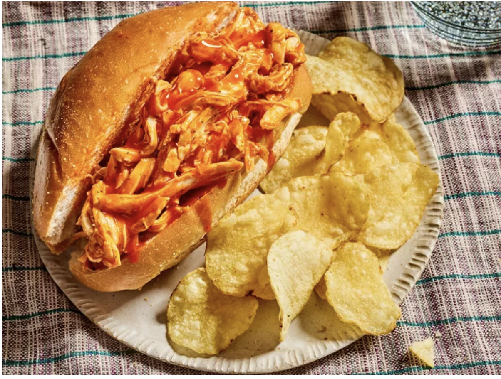

Buffalo Chicken Sandwich

This crockpot Buffalo chicken is great for hearty sandwiches that will please those who love Buffalo chicken wings. This recipe is perfect for those days spent watching football. I like to top these with blue cheese or ranch dressing.
- 4 skinless, boneless chicken breast halves
- 1 (17.5 fluid ounce) bottle Buffalo wing sauce, divided
- 1/2 package dry ranch salad dressing mix
- 2 tablespoons butter
- 6 hoagie rolls, split lengthwise
Directions:
- Place chicken dressing into slow cooking; pour 3/4th of wing sauce and ranch dressing mix
- Cover and cook on Low for 6 to 7 hours
- Shred chicken in cooker with two forks. Stir in butter.
- Pile shredded chicken and sauce into hoagie rolls. Serve with remaining buffalo sauce.